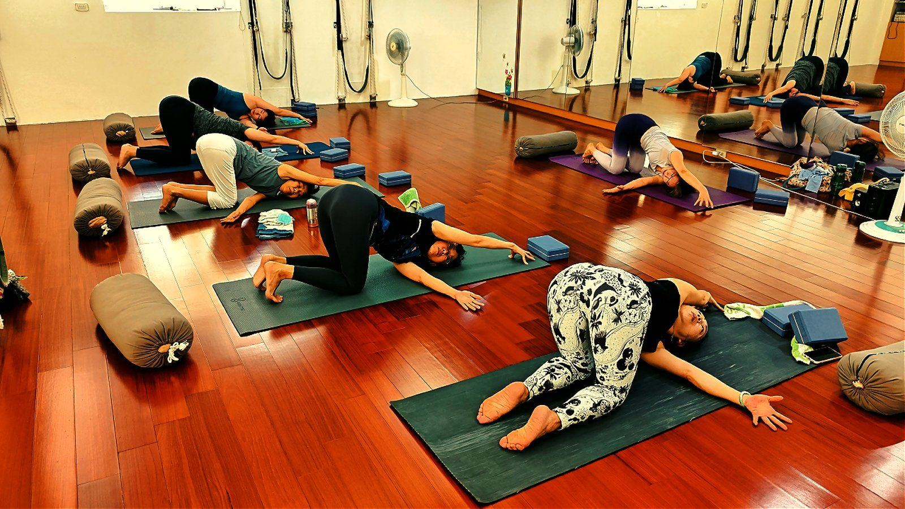

坐一整天肩膀就往前掉？認識「上交叉症候群」

下班照鏡子，側面看有點駝、肩膀不自覺往前掉，脖子也跟著前伸。這在體態上有個名稱——上交叉症候群（Upper-Crossed Syndrome）。它不是年紀到了，也不是你不夠努力，而是一種相當常見、而且可以改善的姿勢性肌肉失衡。先理解它，你會更知道該怎麼幫自己。
什麼是上交叉症候群？
把上半身的側面想像成一個「X」。長期低頭、久坐的生活，會讓這個 X 的其中兩條線變得太緊、另外兩條線變得太弱，形成一組固定的失衡：
- 過於緊繃（縮短）：胸口的胸大肌與胸小肌、後頸上方的上斜方肌與提肩胛肌。它們像被拉緊的橡皮筋，把肩膀與頭往前帶。
- 過於無力（被抑制）：頸部前側的深層屈肌，以及中下背的菱形肌與下斜方肌。它們原本負責把頭與肩胛「穩定回正」，卻因長期少用而變得不易出力。
一緊一弱，在側面交叉成一個 X，這就是「上交叉」名稱的由來。外觀上，它呈現為圓肩、駝背與頭部前傾；感受上，則常伴隨肩頸痠緊與容易疲勞。
問題的核心，不在於「你不想抬頭挺胸」，而在於「負責挺直的肌肉太弱、被叫不動」。因此，改善的方向是兩件事並行：把過緊的鬆開，把過弱的喚醒。
為什麼光靠意志力，挺不住三分鐘？
當你刻意挺直，其實是用其他肌肉在「硬撐」，屬於代償。代償很耗力，也撐不久，所以幾分鐘後又會垮回原本的姿勢。真正能讓改變留下來的，是重新建立正確的肌肉分工——讓中下背有能力把肩胛穩定回正，頸部就不必再過度出力。這也是為什麼，單純提醒自己「站直一點」通常效果有限。
壁繩瑜伽，怎麼幫上忙？
這正是壁繩的專長。牆上的繩帶提供穩定的支撐，讓你能在安全、有依靠的狀態下，一方面伸展過緊的胸口，一方面循序喚醒平常不易啟動的中下背。你不需要先具備很好的柔軟度或肌力，繩子會替你分擔重量、借力找到正確的發力位置——對「越坐越緊」的久坐族尤其友善。若你想更了解它，可以先看這篇：壁繩到底是什麼？第一次上課會做什麼？
要提醒的是：改善體態的重點是「練對位置」，而不是「練得很多」。所以在開始之前，我們會建議先做一次體態檢測，看清楚你的失衡偏向哪一邊、程度如何，再決定先鬆哪裡、先練哪裡，而不是盲目地一起做。
今天就能開始的一個小練習
設一個提醒，每坐約 40 分鐘就起身做一次：雙手在背後互扣，將胸口輕輕打開、肩胛骨往後往下收，維持 5 個深呼吸。這個動作無法一次矯正失衡，但能提醒身體「往回走」，是一個溫和又實用的起點。若想更有系統地調整，仍建議搭配規律練習。
本文為體態與姿勢的一般衛教與練習分享，非醫療診斷或治療。若有疼痛、舊傷或特殊病史，請先諮詢合格醫療專業人員。